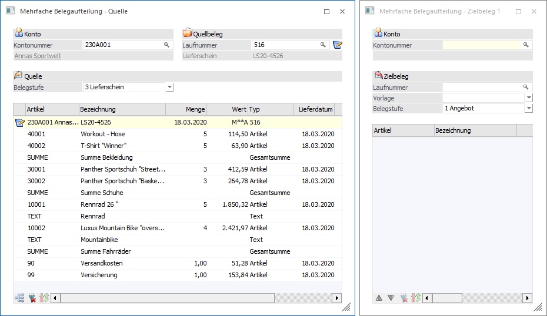

Über den Menüpunkt…
1 WinLine FAKT
1 Erfassen
1 Belegaufteilung
1 Mehrfache Belegaufteilung
… können Belege der Belegstufen "Angebot", "Auftrag", "Lieferschein", sowie "nicht gerechnet / nicht gedruckte Belege" aufgeteilt / kopiert und in weiterer Folge weiterbearbeitet werden.
Hinweis
Der Menüpunkt ist zwar optisch in die Bereiche Ausgangsbeleg(e) und Zielbeleg(e) aufgeteilt, der Bereich "Mehrfache Belegaufteilung - Zielbeleg" jedoch nicht zwingend erforderlich. D.h. es können Belege auch nur im Bereich "Mehrfache Belegaufteilung - Quelle" bearbeitet (zusammengefasst) werden.
Wenn mehrere Zielbelege gebildet werden sollen, so ist dieses natürlich auch möglich, wobei dies per Button "neue Zielbeleg" initiiert werden kann.

Das Programm "Mehrfache Belegaufteilung" ist in die folgenden Bereiche untergliedert, welche in den nachfolgenden Kapiteln beschrieben werden:
ü Quelle
ü Optionen
ü Aktionen